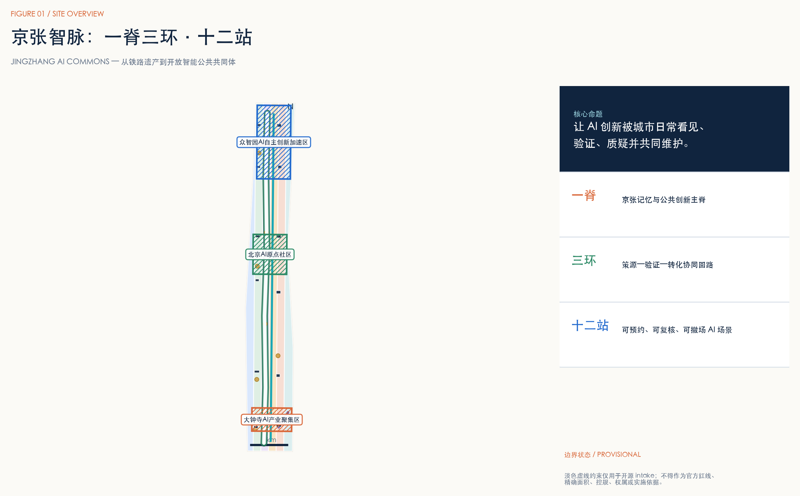
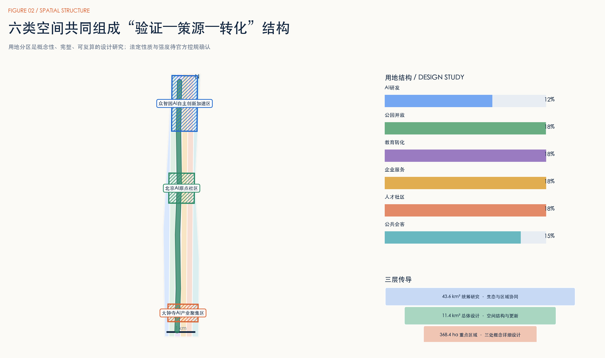
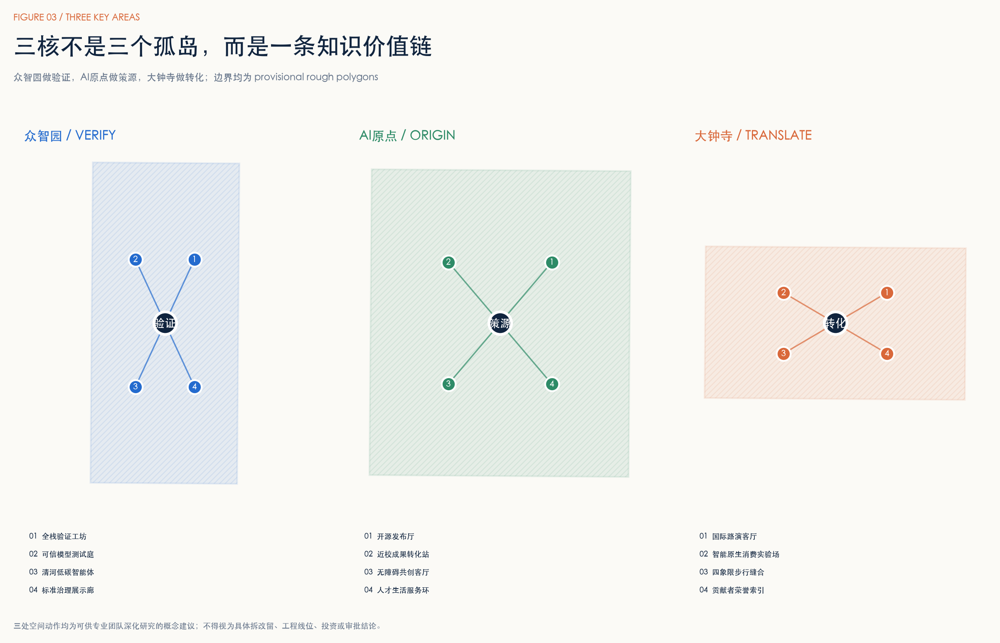
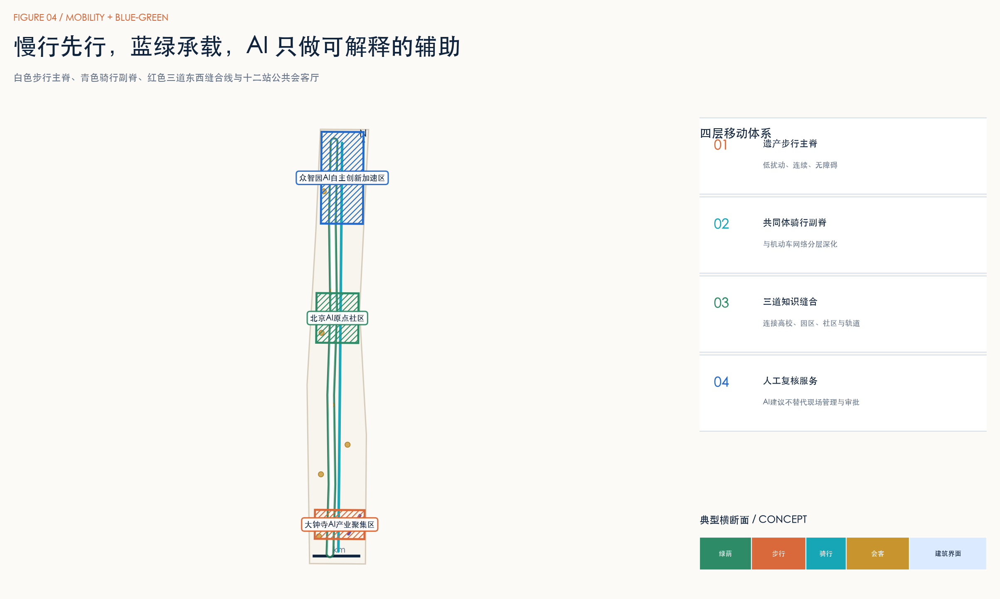
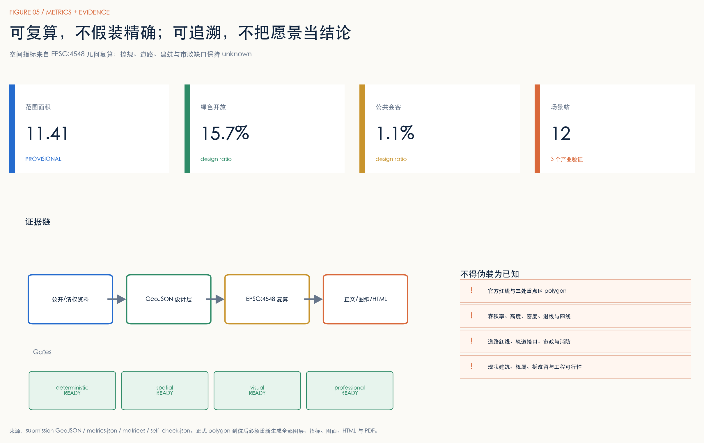

众智园 · VERIFY
- 全栈验证工坊
- 可信模型测试庭
- 清河低碳智能体
- 标准治理展示廊
以京张铁路遗产为低扰动公共主脊，以“验证—策源—转化”为三核价值链，用十二个可预约、可复核、可撤场的 AI 场景站，把创新能力变成城市日常公共生活。
PROVISIONAL GEOMETRY · 非官方红线 · 可供专业团队深化研究空间主次来自同一组 GeoJSON；临时边界退为低对比约束。

展示值与 metrics.json 一致；均须结合置信度和假设阅读。
43.6 km² 统筹生态、11.4 km² 总体设计、368.4 ha 重点区逐层传导。

三处重点区分别承担验证、策源和转化角色，不复制同一种园区模板。

慢行先行，蓝绿承载；AI 只辅助识别问题和解释方案，不替代现场管理与审批。

每一站都绑定空间、对象、最小数据、人工复核、运营责任与撤场条件。
预约制算力与模型评测入口；日志分级、到期删除。
红队测试、偏差评估与公众解释；结果须人工签发。
仅用环境聚合数据辅助养护，不识别人脸或个体轨迹。
代码、模型卡与失败经验同台展示，建立贡献可追溯档案。
IP、法务、标准与产品验证一站协作。
残障用户参与测试；AI建议由服务人员复核。
历史资料来源可追溯，AI讲解提供纠错入口。
医疗、教育、法律只做信息辅助，不替代专业决定。
以步行为媒介的开源议题讨论与志愿维护。
限定时空、可撤场、公开评估的机器人与城市智能体测试。
面向全球团队的双语展示与对接，不承诺招商和资金。
记录可复核贡献与版本，不做排名崇拜。
六类用户共享一条公共价值链；活动是概念建议，不是已确定政府安排。
| 用户 | 核心需求 | 空间回应 |
|---|---|---|
| 开源开发者 | 协作、声誉、测试 | 发布厅、散步道、荣誉索引 |
| 科研人员 | 跨校合作、验证 | 联合实验室、转化站 |
| 初创团队 | 算力、法务、市场 | 验证工坊、企业服务 |
| 产业工程师 | 测试、标准、交付 | 沙盒、复核台、路演客厅 |
| 周边居民 | 安静、便利、公平 | 慢行、公共服务、数据退出 |
| 访客与青少年 | 理解、体验、学习 | 记忆站、开放日、双语导视 |
| 季度 | 概念活动 | 沉淀资产 |
|---|---|---|
| Q1 | 开放问题季 | 公共议题与场景白名单 |
| Q2 | 城市智能体试验季 | 模型卡、风险记录、失败档案 |
| Q3 | 全球 AI Commons Week | 公共路线、双语传播、合作线索 |
| Q4 | 贡献审计与年度回放 | 可验证贡献索引与下一年任务 |
proposal、GeoJSON、metrics、三类矩阵、PDF 与离线 HTML 彼此一致。

官方公告、清权 agent 任务书、住建部城市设计与控规文件、自然资源部用地分类指南，以及六个官方机构案例页面均登记在 sources.json。案例只用于机制比较。
官方红线、控规、道路、建筑、文保、市政和权属资料仍缺失。所有空间与运营动作均为概念建议、参考方案或可供专业团队深化研究，不构成政府审定、审批、投资或实施承诺。